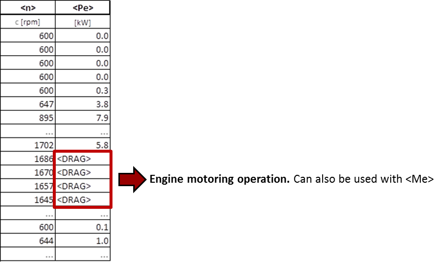

When this mode is enabled in the Job File then VECTO only calculates the fuel consumption based on a load cycle
(engine speed and torque).
In the
Job File only the following parameters are needed:
- Filepath to the Engine File (.veng)
- Driving Cycles including engine torque (or power) and engine speed
The
driving cylce
(.vdri) must contain:
- Engine speed: header: <n>
- Engine torque <Me> or
engine power <Pe> at clutch. To explicitly define motoring operation
use the <DRAG>
keyword, see below. VECTO replaces the keyword with the motoring
torque/power from the .vfld
file during calculation.
- [Optional] Additional power demand (aux)
<Padd>
Note that
VECTO adds the engine's inertia to the given power demand!
Example
.vdri cycle:
